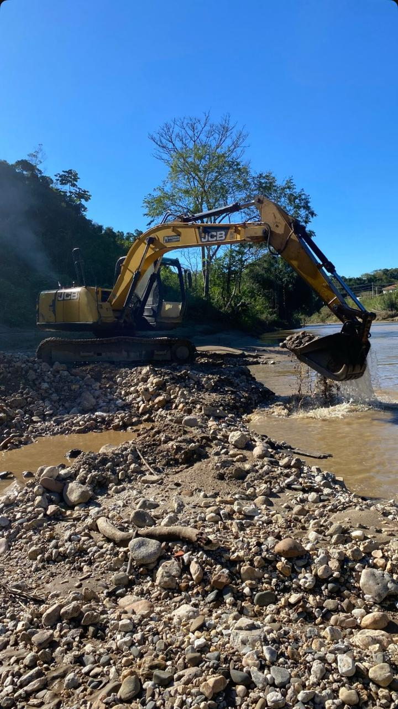

Sobre a Pedras Grandes
Fundada em 2024, a Pedras Grandes surgiu com o propósito de oferecer ao mercado produtos de alta qualidade no segmento de extração de pedras e areias de rio.
Com uma equipe dedicada e experiente, buscamos atender nossos clientes com responsabilidade, eficiência e transparência em todos os processos.
Nosso compromisso está na excelência do atendimento e na qualidade dos materiais que fornecemos, garantindo sempre soluções confiáveis para obras, construções e demais demandas do setor.
Acreditamos que o sucesso vem do respeito ao cliente, à natureza e ao trabalho bem-feito.
O que nossos clientes dizem
"Material de ótima qualidade e atendimento agil. A Pedras Grandes superou nossas expectativas em todos os sentidos!"
— João Martins, Engenheiro Civil"Além do ótimo atendimento, os preços são justos e a equipe foi muito atenciosa durante todo o processo."
— Ana Beatriz, Cliente Particular